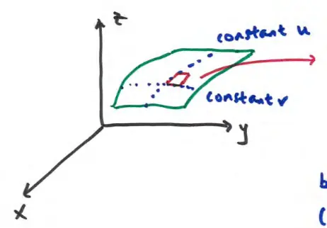
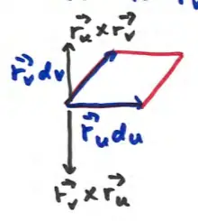

17.6 Surface Integrals (part 3)
Last two times: surface integrals in scalar fields
\[ \iint_S f(x,y,z) dS = \iint_R f(u,v) |\vec{r}_u \times \vec{r}_v| dA \]
area of small patch of surface S
Consider a surface in the 3D coordinate system with parameters \(u\) and \(v\). A small patch on the surface is bounded by curves of constant \(u\) and constant \(v\).

Area of the patch:
\[ \text{area} = |\vec{r}_u \times \vec{r}_v| du dv \]
But \(\vec{r}_u \times \vec{r}_v\) is also the normal vector (so is \(\vec{r}_v \times \vec{r}_u\)).

- In a scalar field, we work with the magnitude of the normal, so the order of the cross product doesn't matter.
- In a vector field, direction matters. So, which one to choose?